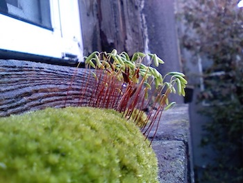

A resume made from a blank Microsoft Word document. No templates or wizards were used.

A multi-page conference proposal made in Microsoft Word.

Project made for art show at Mesa Community College. Created in Photoshop for Windows.

Logo made for a Twitch.tv channel. Created in Photoshop and After Effects for Windows.

Photo taken outside of my Portland, Oregon apartment.